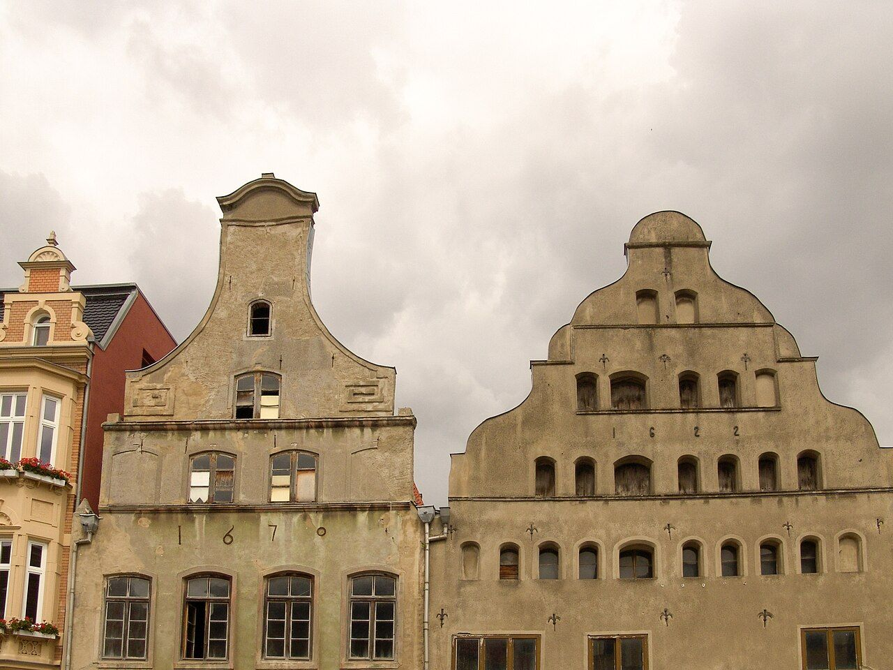
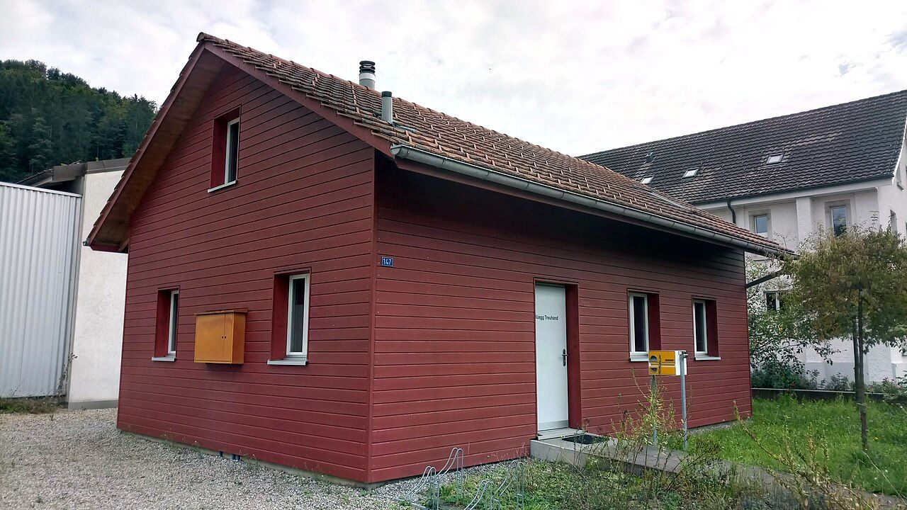
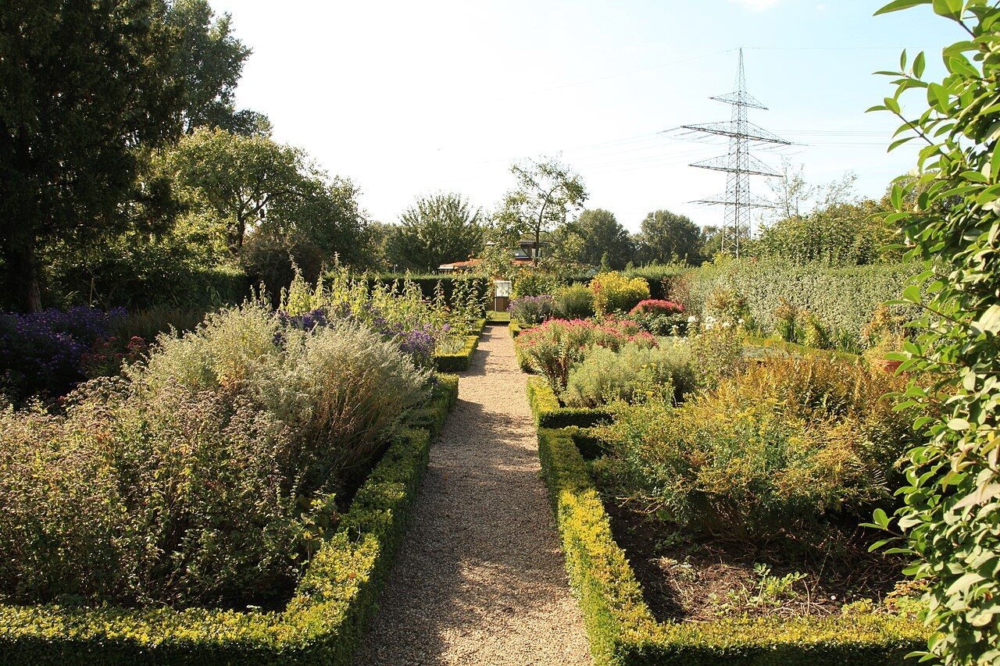

Was ich für Sie planeWhat I design for you
Sanierung, Neubau und Garten aus einer Hand. Sie bekommen eine Planung, die Haus und Grundstück zusammen denkt.Renovation, new builds and gardens from a single source. You get a design that treats house and plot as one.
Alte Häuser fit für die Zukunft machenMaking old houses fit for the future
Viele Häuser in Wismar und auf dem Land haben Geschichte. Ich plane Sanierungen, die Charakter erhalten und den Energieverbrauch senken.Many houses in Wismar and the countryside have a history. I design renovations that keep their character and cut energy use.
- Bestandsaufnahme und BauzustandsanalyseSurvey and condition assessment
- Energetische Sanierung, Dämmung, HeizungEnergy upgrades, insulation, heating
- Umbau, Ausbau von DachgeschossenConversions and attic extensions
- Abstimmung mit der DenkmalpflegeCoordination with the heritage office
- Hilfe bei Förderanträgen (z. B. KfW, BAFA)Help with grant applications (e.g. KfW, BAFA)


Ihr Haus, von der ersten Skizze anYour house, from the first sketch
Gemeinsam entwickeln wir ein Haus, das zu Ihrem Alltag, Ihrem Grundstück und Ihrem Budget passt.Together we develop a house that fits your daily life, your plot and your budget.
- Grundstücksberatung vor dem KaufAdvice on plots before you buy
- Entwurf und KostenschätzungDesign and cost estimate
- Genehmigungsplanung mit PartnerbürosPlanning-permission drawings with partner offices
- Ausführungsplanung und AusschreibungConstruction drawings and tendering
- Begleitung auf der BaustelleSupport on site
Garten und Haus als EinheitGarden and house as one
Ein gut geplanter Garten verlängert den Wohnraum nach draußen. Ich plane Außenanlagen, die zum Haus und zur Küstenlandschaft passen.A well-designed garden extends your living space outdoors. I design outdoor spaces that suit the house and the coastal landscape.
- Gartenplanung und BepflanzungskonzepteGarden plans and planting schemes
- Terrassen, Wege, EinfahrtenTerraces, paths, driveways
- Windschutz und Hecken für KüstenlagenWind protection and hedges for coastal sites
- Regenwassernutzung, TeicheRainwater use, ponds
- Pflegeleichte, heimische PflanzenLow-maintenance, native plants

Lassen Sie uns sprechenLet's talk
Erzählen Sie mir von Ihrem Vorhaben. Das erste Gespräch ist unverbindlich.Tell me about your plans. The first meeting is free of obligation.